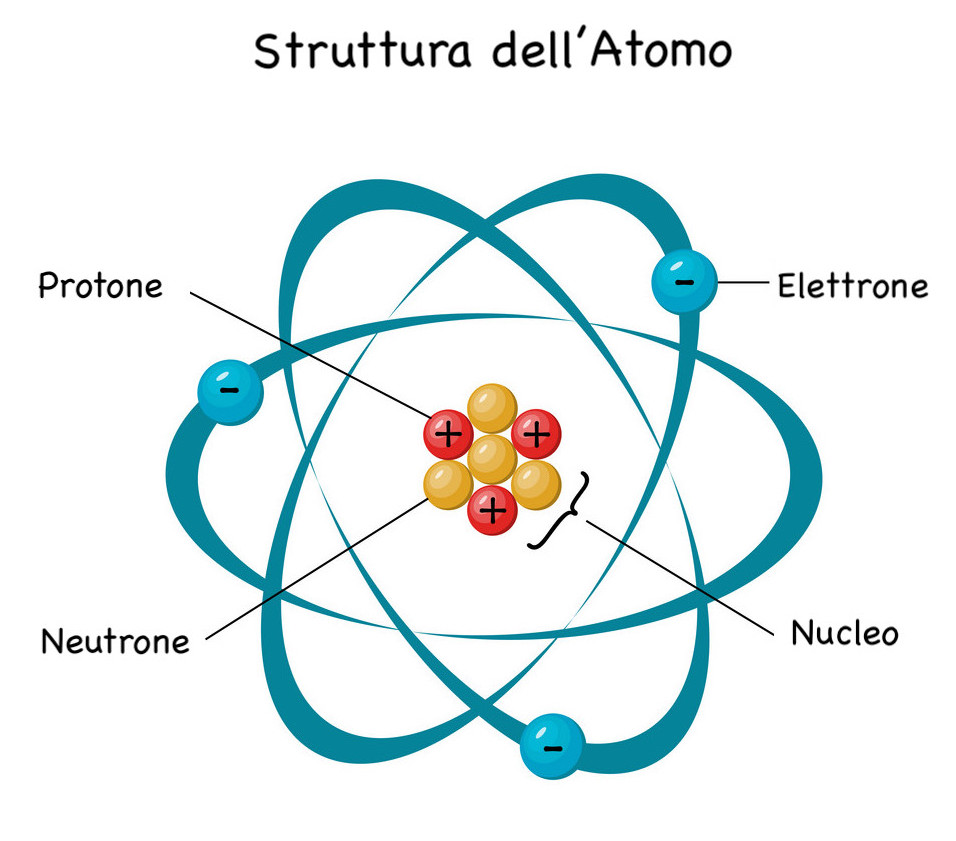

ATOMO
L'atomo è una struttura nella quale è normalmente organizzata la materia nel mondo fisico o in natura.
Più atomi formano le molecole, mentre gli atomi sono a loro volta formati da costituenti subatomici.
Tali costituenti subatomici sono 3:
- i protoni, con carica positiva e situati nel nucleo;
- i neutroni, con carica neutra, anch'essi situati nel nucleo;
- gli elettroni, essi girano attorno al nucelo con carica negativa.
